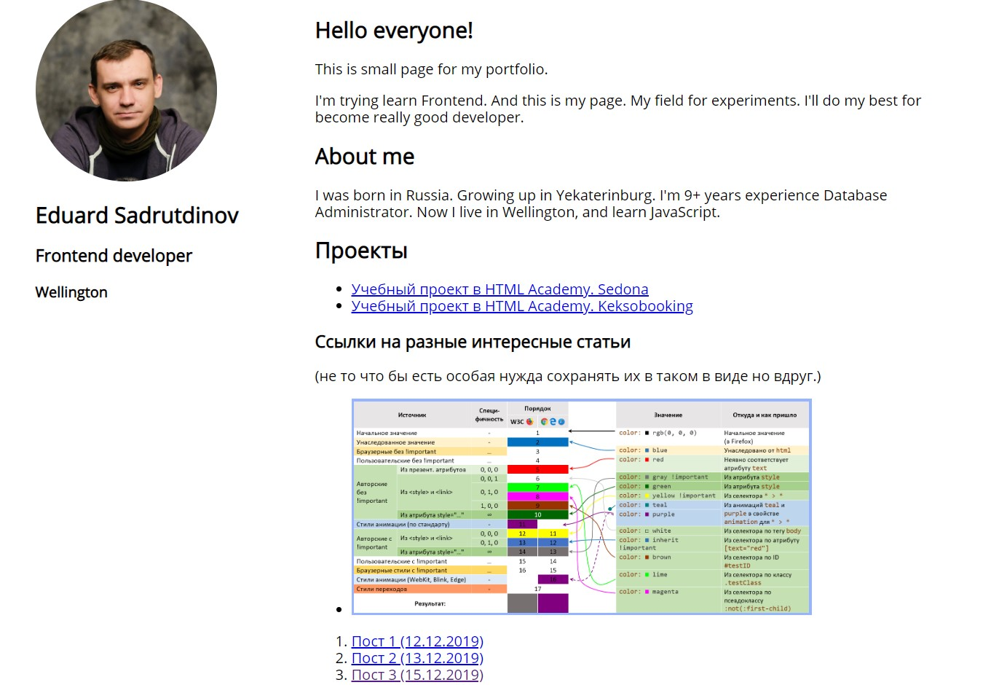

This is small page for my portfolio.
I'm trying learn Frontend. And this is my page. My field for experiments. I'll do my best for become really good developer.
Post 7, Третья часть стодневки.
Итого на 17 день. Пробрался через заросли одностороннего датабиндинга пока что все с трудом. Вторая часть пока что в процессе.
Так как часть CSS закончилась отложил оформление своего портфолио, но переключился на проект по hqbuilder. Ноконец то добрались руки и как то в потоке собрал основу для функции. Ну то есть расковырял всю нужную верстку. Разобрался, что и как делает Knockout.js. Собрал новые шаблоны и функции в модели. Осталось только функции кнопок переписать.
К верстке мы еще вернемся в след. частях, но бутстрап уже пошукал немного. Занятный конечно инструмент. Это я к тому что уже немного забегаю вперед и смотрю на след. главы. Хотя мера вынужденная, без нее не собрать задачу по проекту. Вообще по CSS очень много материала притом начального уровня. Как собирать из всего этого сложные вещи никто не рассказывает.
27.12.2019
Post 6, Датабиндинг.
Ок. Допрошел рекомендованые по CSS курсы на фрееКодеКамп. Сейчас мучаюсь датабиндингом. Это вообще что то непонятное. Я просто не понимаю. И хуже не понимаю что и как происходит в примере. Ок. Есть классы. Есть реализацтя теплейтов. Есть даже как бы форма и реализация отправки. НО как все это связать вместе непонятно.
Страшно растроен. Важнейшая тема, а я не понимаю как ее реализовать.
20.12.2019
Post 5, Оформление. Начало.

Ну что? Уже лучше?
Начал оформление странички. Муторно и долго выбирал, какой формат хочу видеть. Все таки работать когда у тебя уже есть готовый дизайн и версать без дизайна, это две большие разницы
17.12.2019
Post 4, Скрин по окончанию HTML части.

Простенько но как есть.
С завтрашнего дня начинаю прикручивать CSS
15.12.2019
Post 3, Выходные и зачатки планов
Честно про часть текущих проектов я рассказал в первом посте, но не рассказал про будущие задумки. Из того что планирую как не учебный проекты. В условиях инди вэба и стодневки развить собственный сайт до живого состояния. То есть красивую визитку. (А не то что сейчас вы видите. CSS, дизайн все дела. Отдельны вытащить все верстки и учебные проекты. Что бы было что показать. Так же прикурить что то из динамики для иллюстрации скилов. Второе это попробовать сделать небольшое десктопное приложение на JS. (вот статья которая меня с подвигла все это попробовать). Далее через 100 дней отправиться на изучение React. Потом Node..
В общем планов громадье, как видите.
В выходные тоже не приходиться скучать. Тренировки и поездки на разные мероприятия. Отлично помогает иногда отрываться от экрана. Вчера, например, съездили в Палмерстон Норф. Небольшой городок с интересной центральной площадью на которых происходил фестиваль шотландских оркестров, игры шотландцев и куча каких то более мелких мероприятий. Интересно в общем.
Ладно. Этот пост закончен и требуется в основном что бы был контент на страничке, а также для практики HTML и CSS на след. неделе. Блин надо бы еще скрин сделать что бы было видно как все это изменяться. Это же фронтенд все таки, интерфейсы.
15.12.2019
Post 2, My English Practice
Day 2.
Today remember basic HTML tag. I know them, but Repeat it is necessary for good memory.
Now I read a lot. Today my book for reading is Mortal Engine. It’s of cause not included Documentation and around IT. What is made me happy? I don’t know. But work in computing programs really relax. My main goal in English it speaks free and doesn’t have a problem with work communication.
Yeah. Today I learn the hard theme in JS. Databinding. It's really difficult.
13.12.2019
Пост 1, который совсем не пост
Что уже было и что идет сейчас. Давай те на чистоту, я как бы человек закончивший вуз по информационным технологиям, отработал в индустрии довольно много в разных компаниях с разными требованиями. Но все равно чувствую себя довольно неопытным и скорее всего из-за того, что не могу нормально писать программы. ну то есть основы знаю, фундамент вроде есть. Задачки небольшие могу решать и скрипты писать. Но все равно не полноценный разработчик и все тут. Так что решено было что-нибудь все-таки освоить. Почему фронтенд да все просто, меня всегда тянуло к прекрасному, ну то есть к графике. Даже немного владею PS и 3DMAX, хотя давно в прошлом. А тут вроде два зайца одним махом. Интерфейсы, красивые картинка, программирование и веб опять-таки. JS вроде прост же в изучении (сарказм)
Ладно лирика. Что сейчас есть и делаю. HTML Academia, начальные интенсивы и курсы по верстке. Со скрипом, но прорываюсь через продвинутые интенсивы. Всякие мелкие вэбираны и пр. (бесполезно). Workflow. Вписался в движ по небольшому проектику HQ-builder.com буду апгрейдить. Слежу за 24 дня индивэба. Хорошая штука дает практику всяких разных задач. Codewar - отработка задачек на поломать голову. 100 дней фронтэнда. Вообще этот пост написан как самостоятельная работа по этому поводу
12.12.2019